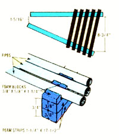
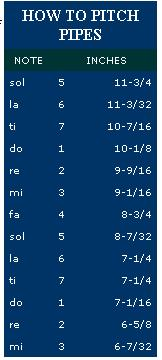

Many children first experience musicmaking while banging on the tinny, offkey bars of a toy xylophone . . . and- though it's wonderfully stimulating for the youngsters-such activity is often a real headache-producer for their parents. However, you can inspire your young musician's creativity, and soothe your own nerves, with the down-home musicmaker pictured here.
After a shopping trip for materials (during which you'll lay out a lot less cash than you'd need to purchase most manufactured toys nowadays) and an hour or so of assembly time, you'll have a permanent instrument on which your child can enjoy learning the elements of musical theory. Furthermore, I think you'll be amazed by this xylophone's pleasing tone . . . and if you have a good ear, you can even adapt the design to vary the number or pitch of the instrument's "keys".
HOW IT'S PUT TOGETHER
The simple xylophone is made from common, readily obtainable materials . . . some of which you may already have around the house. The pipes are nothing more than sections of electrical metallic tubing (E.M.T.), usually sold in hardware or building supply stores. You'll need one standard 10-foot length, which should cost between $2.00 and $3.00. The 1/2" sizewhich has an outside diameter of almost 3/4" will make a xylophone consisting of 13 pipes, like the one shown in the photo . . . with three notes below the standard eight-tone octave and two above it.
The instrument's base is a wide piece of 3/4" shelf board (about 11" X 24"). Rather than resting upon the wood, though, the pipes are supported and cradled by an assembly of long strips and small blocks of polyurethane foam . . . which is secured with ordinary white household glue.
PIPES
To begin, use either a pipe cutter or a hacksaw to divide the conduit according to the measurements indicated on the chart that accompanies this article. Start with the longest one. The length of each pipe determines its pitch, so try to match the measurements as precisely as possible . . . but allow a little extra when you cut, to permit fine-tuning adjustments. Check each notemaker against the preceding one: The new note should be the next tone higher in the scale. (Remember that the changes from ti to do and mi to fa are halftones . . . while the other intervals are whole tones.) If the pitch is flat (too low), you can saw off a little more to correct it . . . and very small discrepancies can be fixed later by extra filing.
It's a good idea to err on the side of too long, since it's impossible to add length to a pipe. If you do find that the pitch is sharp (too high), cut a new piece of pipe for that tone, and shorten the "mistake" for use as the next highest note in the scale.
Most simple xylophones-such as this one, which is approximately in the key of G-have pipes representing only the notes of a major scale, but you can estimate and "whittle" more half notes (or even additional octaves) to expand the instrument's versatility. (If you want to be able to play your xylophone along with a piano that's tuned to concert pitch, however, you'll likely have to shorten all the tubes a tad.)
After the pipes have been sawed to the specified lengths and tuned, their cut ends should be ground smooth. Use a round metal file inside the mouth, and a flat file for the outside surface. You'll probably also want to finish those areas with fine black (silicone carbide) sandpaper. When you're done, check the edges with your finger to be sure there'll be no danger to young musicians.
FOAM
If they're to resonate clearly, the pipes must rest on an absorbent yet resilient foundation . . . and polyurethane foam is an ideal material for that purpose. When I made my xylophone, I merely cut strips of foam from an old mattress, but-if you don't have any such scraps around the house-you can often pick up bundles of odd pieces of polyurethane, at fabric outlet stores and the like, for under $1.00.
First, take a sharp knife (or use an electric carving knife or a band saw if you have one) and cut two 1-1/4" X 17-1/2" strips. These supports should be at least 3/4" thick so that the pipes won't hit the board when struck. (You can, of course, cut the strips from 3/8" foam, as in the diagram, and make each support from a double layer of the material.)
Lay the foundation strips in a V-shaped formation on the wooden base and adjust the angle so the space between the inner edges of the cushions measures 1-5/16" at the small end and opens up to 8-3/4" at the wide end of the "V". (The pipes will then be supported at the points that create the least interference with the music.) Attach the pieces of foam to the wood with plenty of white glue . . . the spongy material tends to absorb the adhesive readily.
Next, cut 28 small blocks of foam, each about 5/8" X 1-1/4" (you may want to slice them into parallelograms so they'll align with the slanted supports), and glue the first pair flush with the ends of the strips, just to the left of the spot where the longest pipe will be. Lay the tube in place-barely touching the blocks-then glue on the next pair . . . and so forth. It's a good idea at this point to arrange all the pipes across the supports and pencil in the spots where the rest of the foam pieces must be attached, so that you'll come out even at the other end.
When the glue has set, nestle each section of conduit in its own cradle . . . making certain that it protrudes an equal distance at each end. This will assure that it rings with the clearest possible sound when it's struck.
MALLETS
Now, all you need is a pair of mallets to make your xylophone sing! The possibilities here are virtually unlimited, and each kind of striker will give the instrument a slightly different tone. To achieve a sweet muted sound, simply use rubber vibraphone mallets purchased from a music store. Wooden drawer knobs attached to foot-long pieces of 3/8" dowel, or even tinkertoy wheels and sticks, will produce louder tones ... but if the youngsters get too boisterous, you can always muffle the noise by stretching a wide rubber band around the head of each mallet. The idea is to unleash your imagination, and experiment with whatever happens to be readily available. (The model shown here uses chopsticks, inserted-and glued-into large wooden macrame beads! )
Once you and your young ones give it a try, I'm sure you'll find that playing the pipe xylophone is easy and enjoyable. Thanks to its simplicity, this homegrown instrument is perfect for improvisation and creative harmonizing. You don't need an instruction book or a teacher, either . . . just pick up the mallets-or hand them to an eager young tunesmith-and sound out some ear-pleasing melodies!
The portion in bold is the basic octave, G major scale
Note Inches
sol 5 11 ¾
la 6 11 3/32
ti 7 10 7/16
do 1 10 1/8
re 2 9 9/16
mi 3 9 1/16
fa 4 8 ¾
sol 5 8 7/32
la 6 7 13/16
ti 7 7 ¼
do 1 7 1/16
re 2 6 5/8
mi 3 6 7/32
EDITOR'S NOTE: Now that your musical muse has been awakened, you may want to try your hand at some other homemade instruments. You can find out how to add to your family orchestra in Simple Folk Instruments to Make and to Play by Ilene Hunter and Marilyn Judson.
|
a girl with a PIPE XYLOPHONE |
 the making |
 |